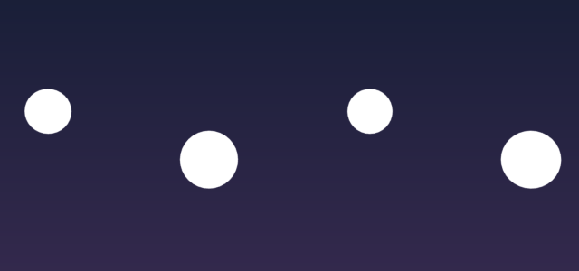
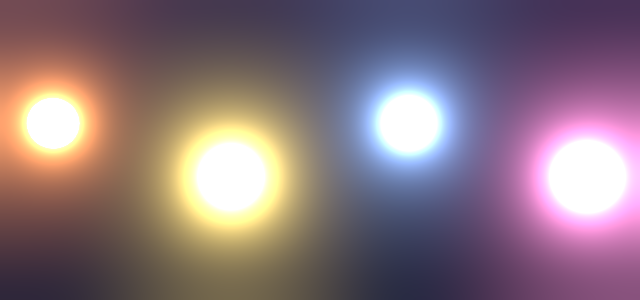
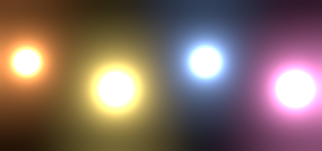

Blender 5.2 LTS / コンポジター / グレア（ブルーム） / 背景の透過
ブルームをかけたまま 背景の透過 ON で書き出すと、ボケが切り取られて球だけになります。
「本体」と「ボケだけ」を 2 本に分けて出し、AE で加算すれば、Blender で見たままの光が戻ります。
Before / After


追加 → 出力 → ファイル出力

glow が真っ黒なら、グレアの「画像」ではなく「グレア」の出口から線が出ているか確認。
背景を黒にすると、Blender のレンダー画面とほぼ同じ（テストで平均 0.3/255 の差）。
Noise / ノイズとボケあし
ノイズ対策の設定には、ボケまで弱くしてしまうものがあります。テストで実際に測った結果です。
| クランプ | ボケの量 |
|---|---|
| 直接 0 ／ 間接 0 | 100%（基準） |
| 直接 0 ／ 間接 10 | 100%（変わらない） |
| 直接 10 ／ 間接 10 | 59%（4 割減る） |
| 直接 1 ／ 間接 1 | 3%（ほぼ消える） |
光る球そのものはノイズがほぼ出ません。ボケをそこからだけ作ると、少ないサンプルでもボケがちらつきません。
追加 → カラー → カラーミックス → 種類を「加算」
ファイル出力の body ・ glow はそのまま。
| ボケの元 | 4 サンプル | 16 サンプル |
|---|---|---|
| 画像（いつも） | ずれ 1.6% | ずれ 0.5% |
| 画像 ＋ デノイズ | ずれ 1.0% | ずれ 0.6% |
| 放射パス | ずれ 0.6% | ずれ 0.2% |
ずれ ＝ 512 サンプルで出したボケとの差
困ったら、ここから。
透明なところの光は PNG に残りません → 02 で「ボケだけ」を別に出す。
body にグレアの「画像」を入れていてボケが二重 → body は レンダーレイヤーの画像から（02）。
グレアの品質が「中」 → 高に（01）。
クランプの 直接光が入っている → 0 に戻して間接光だけに（05）。
グレアの「しきい値」を少し上げる。それでも残れば 07（放射パスから）。